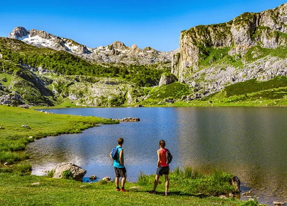
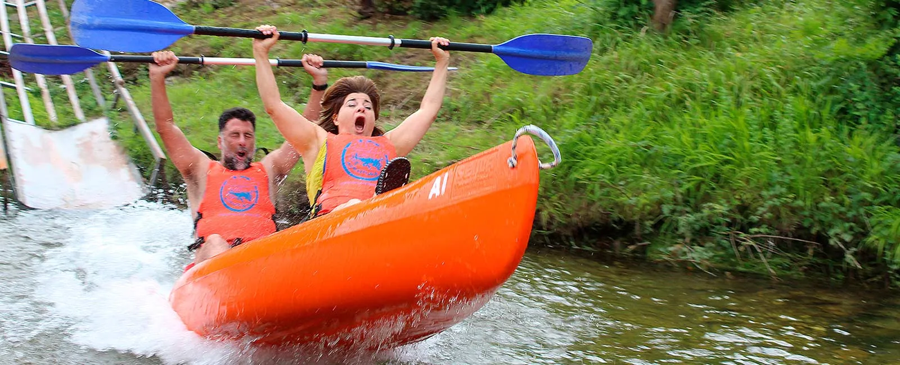
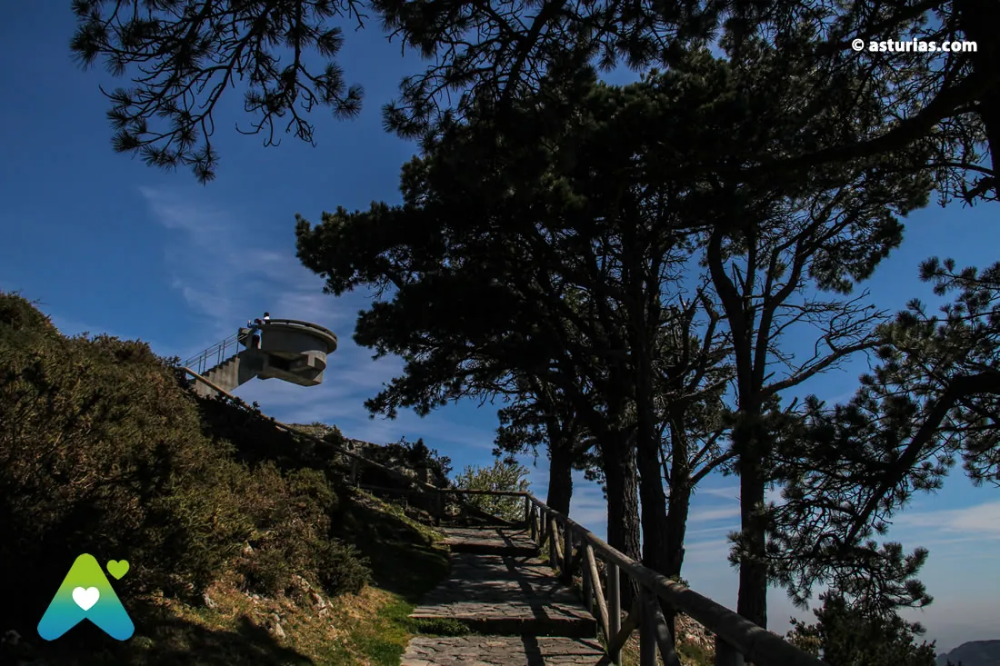
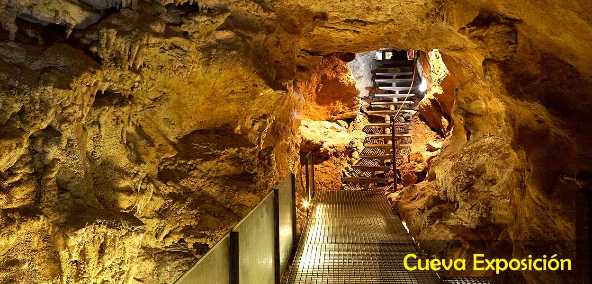
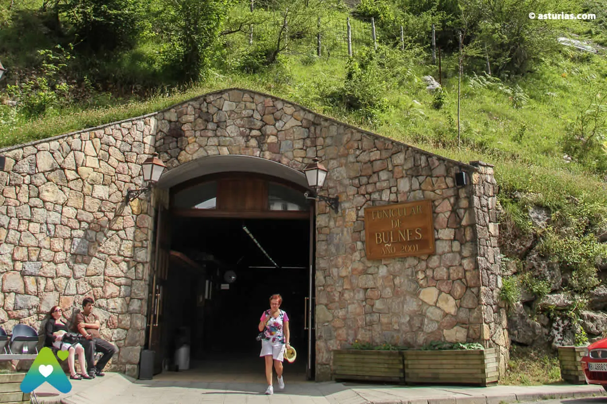
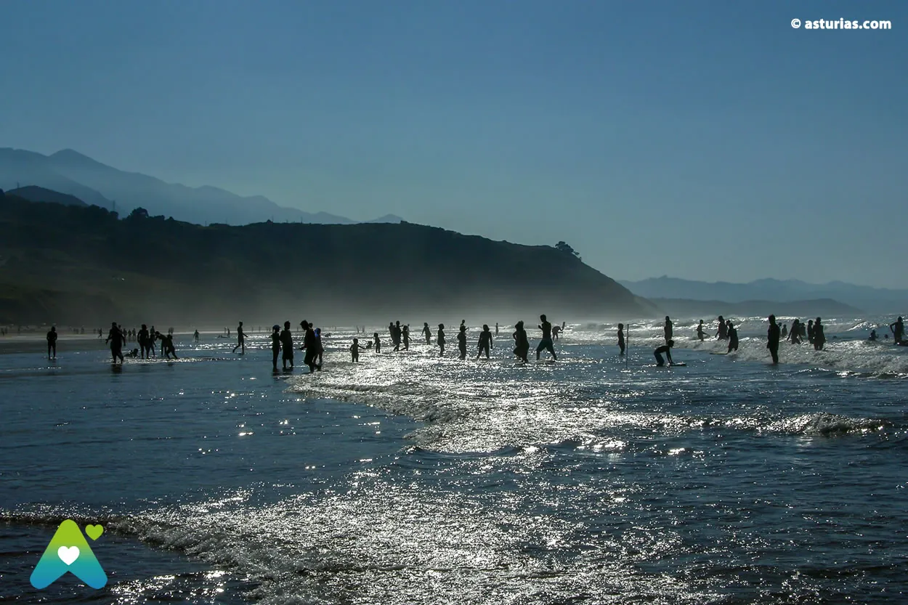

A table at Casa Marcial, and the day you build around it.
catch
The brief's "walking distance" premise breaks on first contact. Casa Marcial sits in the hamlet of La Salgar — "a bucolic handful of houses on one unlit country lane" [1][2]. The closest sub-2 km bed is El Interior de Gaia at ~1.8 km on unlit rural road [3] — fine in daylight, awkward after a tasting menu. Plan the cab before you order the wine pairing.
Forty-eight hours
≈ 17:00Land in Arriondas, settle in
Take the train or drive to Arriondas — small Sella-side town with the railway station 3.5 km from the restaurant [14]. Check in (see "Where to sleep", right), then walk five minutes to the riverbank for a first culín of natural cider. The Sella runs flat and slow here; the Picos rise just inland.
09:00–13:00Pick one of three
Each option fits inside the 30 km radius and leaves the afternoon free for a long decompression before dinner. The Lakes route is the icon; the Sella descent is the local rite; Mirador del Fitu is the half-day-friendly viewpoint with no logistics.

Lakes of Covadonga
Park at Cangas, board the €9 round-trip ALSA shuttle, do the PR-PNPE 2 loop (5 km, 2.5 h, low difficulty, 50 m gain) past Ercina, Enol and the Buferrera mines [18]. Stop at the basilica on the way down.

Sella descent by canoe
Aipol Aventura or Frontera Verde rent the Arriondas–Toraño 8 km / 1.5–2 h run for €35 adult, €25 child — boat, paddle, vest, dry tube, return van included [22][23]. Pickups from 14:00.

Mirador del Fitu
597 m balcony on the AS-260, ~11 km from Arriondas, with a 360º sweep over the Sueve, the Picos and the Cantabrian coast [11]. Drive up, walk the deck, optionally start the hard PR-AS 71 to Pico Pienzu for wild Asturcón pony herds.
14:00–18:30Decompress, eat lightly
Back to the hotel by 14:00 at the latest. A two-Michelin-star tasting menu typically runs 3–4 hours; you'll want appetite and feet up. Light fabada or a salad in Arriondas; a nap; a shower; a slow change. Don't book a second activity on top of the dinner.
19:30The taxi arrives
From central Arriondas the run to La Salgar is short — five minutes by road. Arriondas en Taxi operates 24h and the restaurant will arrange a return cab on request [4][5]. Book both legs at the same time. Confirm the pickup window when you call: a typical tasting menu finishes 23:30–24:00.
20:00Casa Marcial — La Salgar
Nacho Manzano's two-Michelin-star family house, set in the bucolic hamlet that gave its name to the restaurant. Confirm tasting-menu vs. à-la-carte, wine pairing and expected length when you book — these are the details to lock before everything else [15].
09:30–13:30Cangas de Onís Sunday market
A 200-year-old weekly market by the church of Santa María — artisan Cabrales, Gamoneu and Beyos cheeses, fabes beans, honey, cured meats, basketry, ceramics [12]. Cross the medieval "Roman" bridge with the Victory Cross hanging from its central arch.
Where to sleep, how to ride
Narbasu · Palacio de Rubianes
The Manzano family's own 14th-century palace in Cereceda, 20 minutes by car from the restaurant, with a Michelin Green Star on-site. 23 rooms across Standard, Special and Junior Suite categories. The only lodging Casa Marcial recommends [5].
Puebloastur Eco-Resort
5-star Gran Lujo (Asturias's highest hospitality distinction, awarded 2025) in Cofiño, 3 km from Casa Marcial. 28–30 rooms, full spa, Dalí sculpture on the grounds. ~€480/night peak [9].
Hotel Casona del Sella
1923 Indiano-style mansion on the Sella in central Arriondas. 14 individually decorated rooms, 83/100 walkability, 5-minute walk to the centre [10].
Palacio de Cutre
Stone palace with wall, tower and chapel in La Goleta, Piloña. On-site restaurant with seasonal Asturian cuisine. 9.1/10 on Booking; staff and comfort score notably high [34].
El Interior de Gaia
Five themed double rooms at Barrio La Quintana, Montealea. The closest bed to Casa Marcial — but the lane is unlit. Daylight only on foot; cab back from dinner [3].
Hotel El Babú
18th-c. Asturian manor on the N-632 between Ribadesella and Colunga, 7 rooms, renewable energy. Pair with a Sunday on the Cantabrian coast before driving home [36].
2026, dated
Three calendar facts that decide whether the day plan works. Check before the hotel, not after.
CO-4 closed to private cars
The road to the Lakes of Covadonga is shut to all private traffic, all day, for the full Jun–Oct stretch (plus Easter, May weekends, Oct/Nov bookends). Only authorised vehicles (reduced mobility, refuge guests) pass; everyone else parks at Cangas and takes the €9 round-trip ALSA shuttle [13].
Tito Bustillo July onward
If your weekend falls between 1 July and 30 October and you want the UNESCO Palaeolithic cave, tickets go on sale 1 April 2026 and sell out for peak weekends — 15 visitors/slot, 150/day cap, closed Mon-Tue and 8-9 Aug. Free Wednesdays. €4.14 general [14][25].
Descenso del Sella race day
Cannon start 12:00 from the Arriondas bridge for the 88th Descenso Internacional. "Asturias, patria querida" anthem, Tren Fluvial spectator train, fabada-and-rice-pudding finale at Lloviu. Don't book a casual canoe descent on race day; do book a window seat [24].
Just past 30 km
These sit a hair outside the strict 30 km radius from Arriondas but earn an easy half-day each if your weekend stretches.

Cueva del Queso Cabrales
45-min guided cave tour at Arenas de Cabrales. €6 adult, max 20 per slot, 10–15 °C inside — bring a layer.

Bulnes funicular
€22.16 round-trip, 7 min ride, 400 m climb to a village reachable only by funicular or footpath; Naranjo de Bulnes views [19].

Playa de Vega
2 km surf beach with rare preserved dunes, Jurassic clay cliffs and the "Superman" break — dangerous to swim, ideal to surf [29].
Casa Marcial dinner mechanics
The brief asked for verified tasting-menu vs. à-la-carte pricing, wine-pairing cost, meal length, dress code, reservation lead time, and whether a table books with a room. None of these were verifiable in writing. The restaurant's own reservation page and house page are the authoritative source — expect to confirm the dinner length when you call. Three to four hours is typical for two-star tasting menus, which sets your taxi return window.